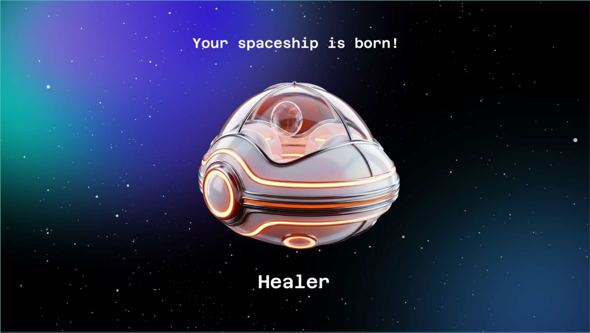

Case Study · AI Experience UX
VIVE AI Kiosk Experience Design
A kiosk-based AI experience designed for VIVE Studios, connecting visitor interaction, generated output, and on-site immersive media display at Incheon Inspire Resort.
Overview
Design Context
The project translated an AI interaction flow into a public-facing kiosk experience for an immersive resort installation, where visitors could move from input to generated media output.
Experience Direction
The UX connects visitor action, AI interpretation, screen feedback, and spatial display so the AI result feels like part of an on-site media experience rather than a standalone tool.
Experience Flow
Visitor Input
Structure the kiosk entry point so visitors can begin the AI experience quickly in a public installation context.
AI Interpretation
Connect user choices and system states to an AI-driven generation flow with clear interface feedback.
Generated Result
Present the generated output as a visible, celebratory result that can be understood at a glance.
Kiosk Feedback
Design interface states for guidance, progress, confirmation, and result review on the kiosk screen.
Immersive Display
Bridge the kiosk interaction with the surrounding media installation and on-site display environment.
On-site Installation


Outcome
Production Case
The project demonstrates how AI UX can be shaped into a deployed visitor experience for a public immersive media venue.
Practice Area
This work sits between AI experience design, kiosk UI, product workflow design, and spatial media installation.